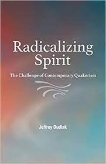
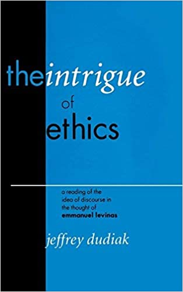
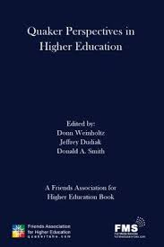

Post-Truth: Facts and Faithfulness

In Post-Truth? Facts and Faithfulness, Jeffrey Dudiak explores the fissures and fractures that vex our so-called “post-truth” era, searching for a deeper, dare we say truer, understanding of the cultural forces that have led North American society to become so polarized. Eschewing the kind of easy responses that trade pluralistic solidarity for tribalistic certainty, Dudiak diagnoses a deeper breakdown in social trust as the underlying issue that has everyone today scurrying for comforting, ideological cover. In this context, Dudiak reminds the reader that truth is more, and runs deeper, than simple correspondence to the facts.
Radicalizing Spirit: The Challenge of Contemporary Quakerism

In Radicalizing Spirit Jeffrey Dudiak takes on the thorny issue of the relationship between Quakerism and Christianity, an issue that divides the Religious Society of Friends today. Drawing on Quaker history, the Bible, philosophy, and his own experience among Friends, Dudiak advocates thinking the relationship between Quakerism and Christianity in parallel with the relationship that Jesus took up with respect to Judaism, that is, as an attempt at “fulfillment,” which requires both fidelity and transgression. He argues, in short, for Quakerism as a form of Christianity so radical that in it “Christianity” itself is put into perpetual question. Across this suggestion, he invites Friends from across the theological spectrum into a deeper sense of mutual appreciation, more meaningful community, and shared calling.
The Intrigue of Ethics: A Reading of the Idea of Discourse in the Thought of Emmanuel Levinas

“…every page of this book bears witness to a long and intense familiarity with the work of Levinas. Fine-grained studies focused on specific passages of Levinas’s texts move gradually to a persuasive interpretation of his two masterpieces.” — John Llewelyn, University of Edinburgh
“Dudiak displays erudition and sophistication adjudicating in a complex debate between transcendental reflection and empiricism. He carries off the argument with great success.” —Robert Gibbs, University of Toronto
“Jeffrey Dudiak has written a learned book on Levinas, rich and revealing in its detailed analysis and interpretation of texts. But it is also a book with a definite focus and out of a deep conviction.” — Theodore de Boer, Vrije Universiteit, Amsterdam
Befriending Truth: Quaker Perspectives, Jeffrey Dudiak, editor
Befriending Truth: Quaker Perspectives is Volume 2 of the Friends Association for Higher Education’s “Quakers & the Disciplines” series. Truth, today, is a highly disputed notion, yet remains a central concern for Friends. This book is an exploration of the meaning and function of the complex notion of “truth” within Quaker life and thought, both historically, and in current practice. In this book a dozen Quaker scholars, from across the theological spectrum, and from a variety of disciplinary backgrounds, contribute their voices to this important discussion.
Quaker Perspectives in Higher Education, Donn Weinholtz, Jeffrey Dudiak, Donald A. Smith, editors

Quaker Perspectives in Higher Education is composed of articles drawn from the first fourteen issues of Quaker Higher Education (QHE), FAHE's biannual, scholarly journal, which the association launched in 2007. Initiated as a vehicle for promoting communication among Quaker scholars, QHE has become a popular venue for sharing many of the finest papers and write-ups of presentations from the annual FAHE conference, products that previously too often disappeared following each conference's conclusion. It also solicits articles addressing a wide variety of topics and issues of interest to Friends.